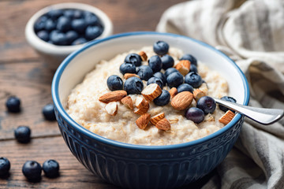

Oatmeal under 5 minutes

Why should you prepare this?
Looking for sweet healthy breakfast, that will feed you for a whole forenoon?
Well then you've found perfect meal that you can prepare in a few minutes.
Ingredients:
- 100 grams of whole oatflakes
- 300 ml of milk
- 1 tablespoon of butter
- 1 tablespoon of honey
- Fruit of your taste
Steps:
- Take a small pot, pour the oatflakes and milk into the pot, and add butter and honey.
- Heat under the pot, and constantly stir it.
- When it's dense, pour it into a bowl.
- Add some sliced fruit and sprinkle it with a cinnamon. Bon appetite!